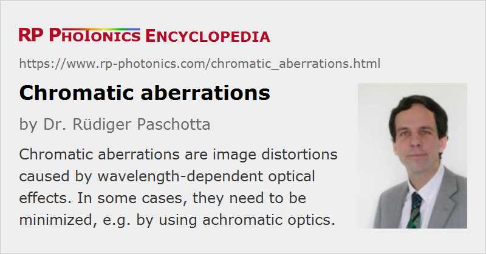

Chromatic Aberrations
Definition: image distortions caused by wavelength-dependent optical effects
More general term: optical aberrations
German: chromatische Aberrationen
How to cite the article; suggest additional literature
Author: Dr. Rüdiger Paschotta
Chromatic aberrations are optical distortions – encountered in imaging optics, for example – which are caused by wavelength-dependent (actually frequency-dependent) effects. Most frequently, they arise from frequency-dependent refraction at air–glass interfaces of optical lenses. However, chromatic aberrations can also occur in the context of prisms and diffractive optics, for example.
Note that reflective optics generally do not exhibit chromatic aberrations. This holds also for dielectric mirrors, despite the wavelength dependence of the refractive index of the used multilayer materials. That wavelength dependence can only affect the reflectance and related aspects such as chromatic dispersion, but not the angular orientations of optical wavefronts. The absence of chromatic aberrations in reflective optics has already been recognized by Isaac Newton, who therefore developed the first reflecting telescope, called the Newtonian telescope in 1668.
Axial and Transverse Effects
A frequently encountered phenomenon is that the axial (longitudinal) position of a focus or a sharp image depends on the optical wavelength; such distortions are called axial chromatic aberrations. They are related to the wavelength dependence of the focal length (and thus the dioptric power) of an optical system. In photography, their impact can be reduced by working with an aperture of smaller size, i.e., a higher f-stop number.
As an example case, we consider collimated laser beams with an initial beam radius of 1 mm, hitting a biconvex lens made of BK7 glass. Both lens surfaces are assumed to have a radius of curvature of 103 mm. Due to the moderate chromatic dispersion of that crown glass, the focus positions vary substantially (see Figure 1) – the deviations are of the order of the Rayleigh length in this case.
Note that the also observed variation of beam radius in the focus is essentially not caused by the material dispersion, but by diffraction.
Figure 2 shows the same for an achromatic doublet made from BK7 crown glass and SF2 flint glass with a numerically optimized design. The wavelength dependence of the beam radius is essentially not caused by the material dispersion, but by diffraction.

There are also so-called transverse aberrations, denoting the wavelength dependence of transverse positions e.g. of image details. They can arise from the wavelength dependence of the image magnification or of distortions. Such effects do not occur at the center of an image and generally increase with the distance from that center. (In contrast, axial aberrations affect the whole image.) An increased f-stop number does not reduce transverse aberrations.
Use of Common Reference Wavelengths; the Abbe Number
Traditionally, chromatic aberrations in the visible spectral region are quantified based on measurements at three wavelengths:
- λF = 486.1 nm (blue Fraunhofer F line from hydrogen)
- λD = 589.2 nm (orange Fraunhofer D line from sodium)
- λC = 656.3 nm (red Fraunhofer C line from hydrogen)
These wavelengths span much of the visible spectral region, and the middle one (the D line) lies in the region of maximum sensitivity of the human eye. The refractive indices of the material at these wavelengths are called nF, nD and nC, respectively. In some cases, somewhat different wavelength values corresponding to other Fraunhofer lines are used, e.g., 480.0 nm (F' line), 587.6 nm (d line) and 643.9 nm (C' line); note that light with some wavelengths is easier to produce in gas discharge lamps than other wavelengths.
An important parameter in the context of chromatic aberrations is the Abbe number, which is defined as
Obviously, the Abbe number becomes small (rather than large) for materials with a strong wavelength dependence of the refractive index. Glasses with a relatively low Abbe number of less than 50 (i.e., with relatively strong dispersion) are called flint glasses, whereas glasses with a higher Abbe number are crown glasses. Typically, flint glasses have relatively high refractive indices, whereas crown glasses exhibit lower values. One might think that one should avoid the use of flint classes in order to obtain low chromatic aberrations; in reality, however, proper combinations of crown and flint glasses are often used for realizing achromatic optics.
Calculation of Chromatic Aberrations
Abbe numbers appear in various formulas for the calculation of optical aberrations, e.g. of an axial mismatch of focus or image positions at certain wavelengths. Such equations can then also be used to calculate parameter combinations for which certain chromatic aberrations vanish (→ achromatic optics). Note that particularly for various kinds of transverse chromatic aberrations, related to the wavelength dependence of various types of imaging distortions, the required equations can become relatively complicated. Therefore, the optimization of optical systems often requires sophisticated numerical optimization strategies.
Of course, calculations based on only three optical wavelengths cannot provide complete information on chromatic aberrations over the whole visible spectral region or even on other spectral regions; the optimization of optical systems often requires one to take into account refractive index data for additional wavelength values.
Even achromatic optics typically achieve a perfect suppression of axial and/or transverse chromatic aberrations only for two or three different wavelengths, while exhibiting more less pronounced distortions at other wavelengths. Note also that a comprehensive optimization of an optical system requires a compromise between different qualities, of which the strength of chromatic aberrations is only one.
Questions and Comments from Users
Here you can submit questions and comments. As far as they get accepted by the author, they will appear above this paragraph together with the author’s answer. The author will decide on acceptance based on certain criteria. Essentially, the issue must be of sufficiently broad interest.
Please do not enter personal data here; we would otherwise delete it soon. (See also our privacy declaration.) If you wish to receive personal feedback or consultancy from the author, please contact him e.g. via e-mail.
By submitting the information, you give your consent to the potential publication of your inputs on our website according to our rules. (If you later retract your consent, we will delete those inputs.) As your inputs are first reviewed by the author, they may be published with some delay.
See also: optical aberrations, lenses, achromatic optics, chromatic dispersion, focal length
and other articles in the category general optics
|  |
If you like this page, please share the link with your friends and colleagues, e.g. via social media:
These sharing buttons are implemented in a privacy-friendly way!